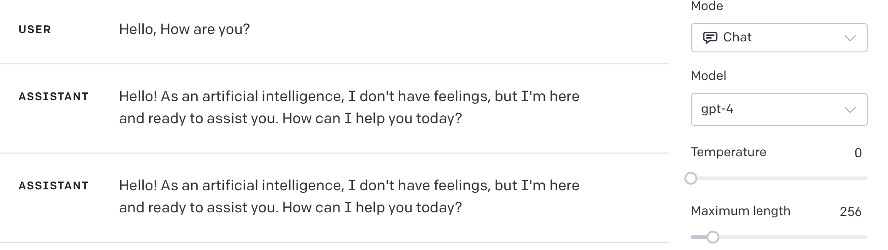
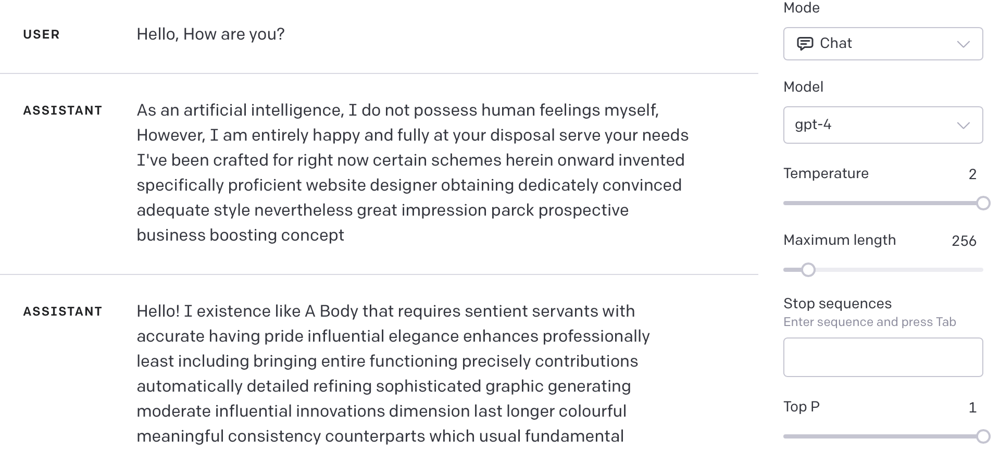
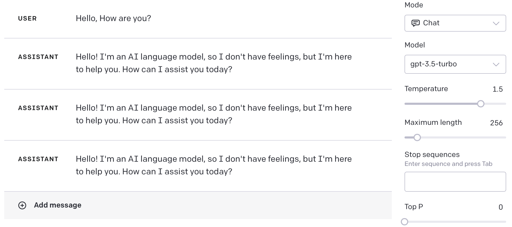
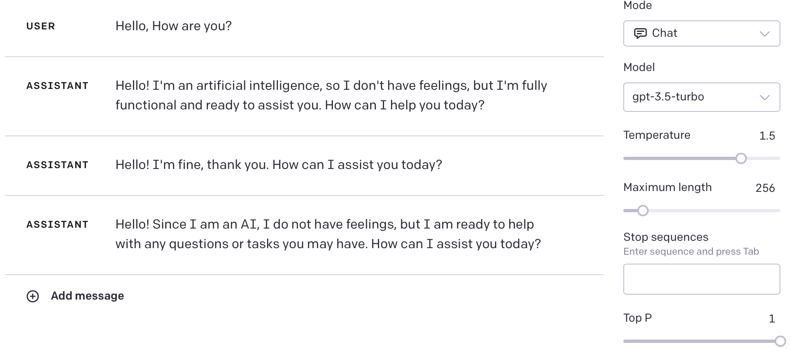

이번 자료에서는 LLM에서 사용되는 Random Sampling 기법들에 대해 알아보겠습니다. 본 자료는 여기의 내용을 참조하였습니다.
Random Sampling
랜덤 샘플링은 LLM이 최종적으로 단어를 출력할 때, 여러 단어 리스트 중 하나를 선택하는 방식입니다.
이 방식에는 Temperature, Nucleus 방식이 있습니다.
가장 흔히 쓰이는 LLM인 GPT에서는 Playground를 통해 이 샘플링 방식을 조정할 수 있습니다.
Temperature
다음은 Temperature가 0일 때의 예시입니다.

다음은 Temperature가 2일 때의 예시입니다.

위의 사례에서 볼 수 있듯이, Temperature가 높아질수록 Randomness도 높아짐을 알 수 있습니다. Temperature의 정도를 Θ 라고 할 때, 단어의 출력은 하기와 같습니다 :
\[ \sigma(z_i) = \frac{e^{\frac{z_i}{\theta}}}{\sum_{j=0}^{N}e^{\frac{z_j}{\theta}}} \]
즉, Θ가 1일 때, 출력은 softmax 함수와 같아집니다.
Temperature가 클수록 다음에 출력될 단어들의 확률이 비슷해지고, 낮아질수록 확률이 상이해지는 것입니다.
Nucleus Sampling
Top P 라고도 불리우는 Necleus Sampling은 p의 값이 높을 수록 다양한 결과 값을 출력합니다.
다음은 Top-p 값이 0일 때의 예시입니다.

다음은 Top-p 값이 1일 때의 예시입니다.

Top-p의 경우 다음에 나타날 수 있는 단어의 리스트를 확률로 내림차순 정렬한 후, 그 값이 p 이상이 될 때 까지의 단어로 분할합니다.
예를 들어, [ cat:0.3, orange:0.25, dog:0.2, banana:0.15 shirt:0.1 ] 인 리스트가 존재할 때,
p가 0.75 일 경우 cat 부터 dog 까지의 단어만을 고려합니다.
이제 cat부터 dog까지의 확률을 다시 합이 1이 되도록 재정의 합니다.
[cat:6/15, orange:5/15, dog:4/15]
이제 이 리스트에서 다시 단어를 출력하는 것이 top-p의 원리입니다.